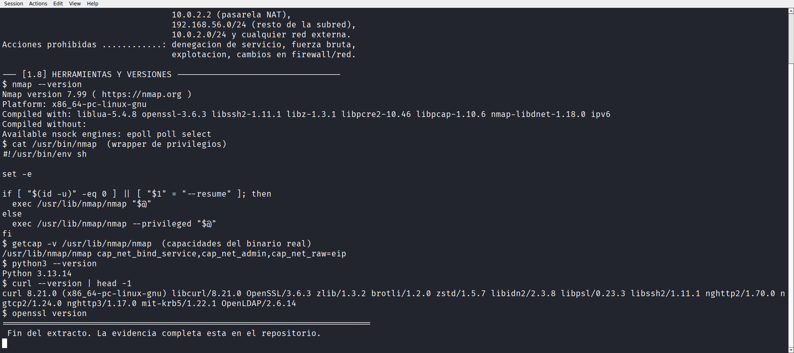
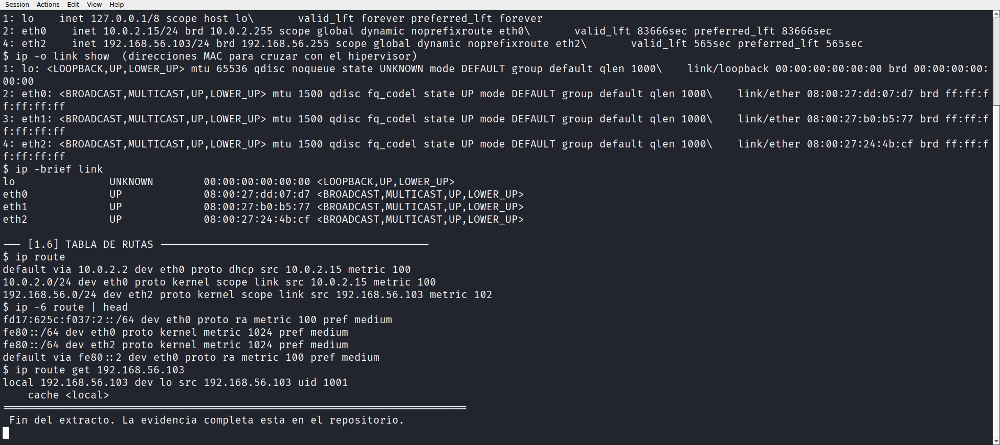
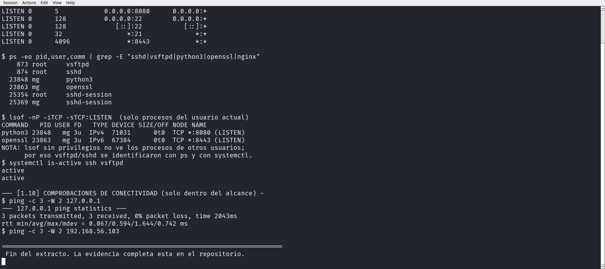

Laboratorio 01 de 06 · Estado completado
Entorno y alcance
Caracterización del laboratorio virtual antes de tocar una sola herramienta de escaneo, qué máquina existe, cómo está cableada, qué versiones hay, qué está escuchando y qué direcciones quedan expresamente fuera de alcance.
1. Resumen para una persona de selección
Antes de escanear nada, este laboratorio fija el perímetro. Sobre una máquina Kali Linux 2026.3 en VirtualBox se verificó desde dos fuentes independientes (el hipervisor y el propio sistema) cuál es cada interfaz de red, qué servicios están escuchando y qué direcciones quedan prohibidas. Solo una dirección está autorizada como objetivo, 192.168.56.103, que es la propia máquina Kali.
El valor práctico que se muestra aquí no es aprender comandos, sino dejar por escrito el límite antes de actuar. Un inventario de activos, una lista de herramientas con versión exacta, comprobaciones de conectividad limitadas al alcance y una declaración explícita de lo que no se va a probar. Ese es el hábito que separa un escaneo autorizado de un escaneo indebido.
Laboratorio académico ejecutado sobre una máquina virtual propia. Las ejecuciones se realizaron desde la estación de trabajo con acceso SSH a Kali y los resultados se conservan como transcripción de terminal auténtica. No hay experiencia profesional, clientes ni certificaciones involucradas.
2. Objetivo técnico
- Identificar la máquina, el hipervisor y el sistema operativo de pruebas a partir de evidencia verificable, no por suposición.
- Mapear interfaces de red, direccionamiento y rutas, cruzando la configuración del hipervisor con la vista del huésped.
- Inventariar servicios escuchando y a qué procesos corresponden, reconociendo qué información exige privilegios.
- Registrar herramientas y versiones exactas para que cualquier otro laboratorio sea reproducible.
- Declarar el alcance autorizado y las prohibiciones antes de ejecutar el primer escaneo.
- Comprobar conectividad únicamente dentro de ese alcance.
3. Entorno y alcance
3.1 Máquinas participantes y funciones
| Elemento | Función | Dirección | Estado verificado |
|---|---|---|---|
| Kali Linux (VM) | Equipo de pruebas y, en este laboratorio, también el objetivo autorizado | 192.168.56.103 |
VMState="running" |
| Host Windows | Anfitrión con VirtualBox. Ejecuta el editor y recibe las evidencias | 192.168.56.1 (host-only) |
Fuera de alcance de pruebas |
| Resto de VMs del hipervisor | No participan | - | poweroff o saved. Ninguna se encendió |
En el hipervisor hay ocho máquinas definidas (Linux Mint, Kali Linux, Windows 7, GNS3 VM, Linux Mint Ciber, Windows11-LAB, Parrot Security, Kali 2026). En el momento de la captura solo Kali Linux estaba en ejecución, según VBoxManage list runningvms. Ninguna otra se arrancó para este trabajo.
3.2 Interfaces y direccionamiento
El modo de red no se dedujo del rango de direcciones. Se leyó la configuración desde el hipervisor y se cruzó con las direcciones MAC declaradas por el huésped.
| NIC VirtualBox | Modo | MAC del hipervisor | Interfaz Linux | MAC del huésped | IPv4 |
|---|---|---|---|---|---|
| NIC1 | nat | 080027DD07D7 | eth0 | 08:00:27:dd:07:d7 | 10.0.2.15/24 |
| NIC2 | bridged | 080027B0B577 | eth1 | 08:00:27:b0:b5:77 | ninguna |
| NIC3 | hostonly | 080027244BCF | eth2 | 08:00:27:24:4b:cf | 192.168.56.103/24 |
| NIC4-NIC8 | none | - | - | - | - |
name="Kali Linux"
ostype="Linux 2.6 / 3.x / 4.x / 5.x (64-bit)"
memory=4096
cpus=7
VMState="running"
nic1="nat"
macaddress1="080027DD07D7"
nic2="bridged"
macaddress2="080027B0B577"
nic3="hostonly"
macaddress3="080027244BCF"
nic4="none"VBoxManage showvminfo "Kali Linux" --machinereadable desde el host Windows. Evidencia completa en evidencias/lab01/hypervisor_vboxmanage.txt.3.3 Servicios del laboratorio
El equipo arranca con dos servicios propios de la instalación, vsftpd en el puerto 21 y sshd en el 22. Para que los laboratorios 03 a 05 tuvieran una superficie real que analizar, se añadieron dos servicios de prueba en puertos altos, lanzados como usuario normal (sin sudo) y retirables con un script.
| Puerto | Servicio | Proceso | Origen | Escucha |
|---|---|---|---|---|
| 21/tcp | FTP | vsftpd (root) | Preexistente (Kali) | *:21 |
| 22/tcp | SSH | sshd (root) | Preexistente, canal de gestión | 0.0.0.0:22 |
| 8080/tcp | HTTP | python3 (mg) | Añadido por este proyecto | 0.0.0.0:8080 |
| 8443/tcp | HTTPS | openssl (mg) | Añadido por este proyecto | *:8443 |
Los puertos 8080 y 8443 no existían en el equipo. Los creó scripts/setup_lab_env.sh con un certificado autofirmado de 30 días. Son reversibles con scripts/teardown_lab_env.sh. Presentarlos como "servicios encontrados" habría sido falso.
3.4 Herramientas y versiones
| Herramienta | Versión observada | Origen del dato |
|---|---|---|
| Nmap | 7.99 (7.99+dfsg-1kali1) | nmap --version, dpkg -l |
| Kali GNU/Linux | 2026.3 rolling | /etc/os-release |
| Kernel | 7.1.5+kali-amd64 | uname -a |
| OpenSSH (servidor) | OpenSSH_10.4p1 Debian-4 | ssh -V |
| vsftpd | 3.0.5-0.5 | dpkg -l |
| nginx (instalado, no activo) | 1.30.0-2 | dpkg -l |
| Python 3 | 3.13.14 | python3 --version |
| curl | 8.21.0 | curl --version |
| OpenSSL | 3.6.3 | openssl version |
| VirtualBox | no registrado en este laboratorio | - pendiente |
3.5 Alcance autorizado y limitaciones
Único objetivo 192.168.56.103 (la propia máquina Kali) y su interfaz de bucle 127.0.0.1. La autorización fue concedida expresamente por la propietaria del laboratorio para este portafolio.
192.168.56.1· anfitrión Windows. No se le envía ningún paquete.10.0.2.2· pasarela NAT. No se prueba.192.168.56.0/24y10.0.2.0/24· no se realiza barrido de subred.- Cualquier dirección pública o de terceros.
Acciones prohibidas, denegación de servicio, fuerza bruta, explotación, cambios en firewall o en la configuración de red que puedan interrumpir el acceso SSH.
Una dirección privada no implica autorización. La lista anterior existe precisamente porque la pertenencia a una red privada es indiferente a la autorización. Sin permiso explícito, ninguna de estas direcciones es un objetivo legítimo.

4. Conocimientos previos
- Modelo de capas y TCP/IP. Para saber que un puerto abierto informa de un servicio que acepta conexiones, no de una vulnerabilidad.
- Linux desde la terminal. Usuario, grupos,
systemd,ip,ss,ps, permisos ysudo. - Redes. Direccionamiento IPv4, máscara /24, rutas, diferencias entre NAT, bridged y host-only.
- Qué son las capacidades de Linux (
cap_net_rawy compañía). Sin este concepto, el comportamiento denmap -sSen este entorno no se puede explicar (se detalla en el Laboratorio 03). - VirtualBox. Máquinas virtuales, adaptadores de red y snapshot como mecanismo de reversibilidad.
Los conocimientos se aplicaron después de leer la documentación oficial de cada herramienta. Las referencias están en la sección 14.
5. Procedimiento reproducible
El laboratorio se ejecutó desde el host Windows con acceso SSH por clave a Kali. Los comandos viven en scripts versionados para que otra persona pueda repetirlos.
Paso 1 · Acceso de gestión
ssh -i <clave_privada> mg@192.168.56.103El acceso usa una clave ed25519 creada para este trabajo e instalada en ~/.ssh/authorized_keys de Kali. Ninguna contraseña aparece en scripts, informes, capturas ni en el repositorio.
Paso 2 · Preparar el entorno (añade 8080 y 8443)
scp scripts/setup_lab_env.sh scripts/teardown_lab_env.sh mg@192.168.56.103:~/labenv/scripts/
ssh -i <clave> mg@192.168.56.103 "script -q -e -c 'bash ~/labenv/scripts/setup_lab_env.sh' ~/evidencias/lab01/e01_setup_lab_env.typescript"Paso 3 · Recoger el estado del entorno
scp scripts/lab01_entorno.sh mg@192.168.56.103:~/labenv/scripts/
ssh -i <clave> mg@192.168.56.103 "script -q -e -c 'bash ~/labenv/scripts/lab01_entorno.sh' ~/evidencias/lab01/e01_entorno_y_alcance.typescript"Paso 4 · Traer las evidencias al host
scp mg@192.168.56.103:~/evidencias/lab01/*.typescript evidencias/lab01/script
script -q -e -c de util-linux graba la sesión real con su cabecera (Script started on …), su pie con el código de salida y la salida tal cual se produjo. Ese archivo es la evidencia primaria. Cualquier extracto mostrado en este informe sale de ahí, solo se eliminaron los códigos de color ANSI para que el texto sea legible.
6. Comandos exactos y explicación de sus opciones
HipervisorVBoxManage showvminfo "Kali Linux" --machinereadable
--machinereadable. Devuelve la configuración en paresclave=valorentre comillas, pensado para leer por programa. Evita interpretar texto humano.- Se extrajeron solo
nicNymacaddressN. Son los campos que permiten cruzar modo de red con interfaz real.
Huéspedsystemd-detect-virt
ip -o link show
ip -o -4 addr show
ip route
ip route get 192.168.56.103
systemd-detect-virt. Informa el hipervisor detectado. Saleoracle. Sin argumentos no falla si no hay virtualización.ip -o link show. Formato de una línea por interfaz. Aquí se usa para leer la MAC y cruzarla con la del hipervisor.ip -o -4 addr show. Solo direcciones IPv4 en formato una-línea, más fácil de comparar congrep.ip route get <dir>. Resuelve qué ruta usaría el kernel para un destino concreto. Devuelvedev loporque la dirección es propia.
Inventario de serviciosss -tln
ss -tlnp
ps -eo pid,user,comm | grep -E 'sshd|vsftpd|python3|openssl'
lsof -nP -iTCP -sTCP:LISTEN
systemctl is-active ssh vsftpd
ss. Sustituto moderno denetstat, lee directamente del subsistema de sockets.-tTCP,-lsolo escuchando,-nsin resolver nombres (evita consultas DNS que enmascaran el dato),-pmuestra el proceso · requiere privilegios para procesos de otros usuarios.lsof -nP.-nsin resolución de nombres,-Psin traducir puertos a servicios y-iTCP -sTCP:LISTENacota a sockets TCP en escucha.
Conectividad, solo dentro del alcanceping -c 3 -W 2 127.0.0.1
ping -c 3 -W 2 192.168.56.103
-c 3. Exactamente tres eco, detección de pérdida fiable sin insistir.-W 2. Espera máxima de 2 segundos por respuesta. Evita bloqueos largos si algo no responde.
Versionesnmap --version
getcap -v /usr/lib/nmap/nmap
dpkg -l nmap vsftpd openssh-server nginx
dpkg -l <paquete>. Versión exacta instalada, no la que declara el binario.getcap -vmuestra las capacidades de archivo, clave para entender el escaneo SYN sin root (Laboratorio 03).
7. Resultados observados
7.1 Identidad y sistema
$ whoami
mg
$ hostname
magdalena
$ id
uid=1001(mg) gid=1001(mg) groups=1001(mg),0(root),4(adm),...,7(sudo),...,103(scanner),...
$ systemd-detect-virt
oracle
$ lsmod | grep -E "vboxguest|vboxsf"
vboxsf 49152 1
vboxguest 57344 7 vboxsfe01_entorno_y_alcance.typescript, secciones [1.2] y [1.4].Usuario mg con uid=1001, perteneciente a los grupos sudo y scanner entre otros. Hostname magdalena. Sistema Kali GNU/Linux Rolling 2026.3, kernel 7.1.5+kali-amd64. systemd-detect-virt devuelve oracle y el módulo vboxguest está cargado. El hipervisor es VirtualBox, confirmado desde dentro de la máquina.
7.2 Interfaces y rutas
$ ip -o -4 addr show
1: lo inet 127.0.0.1/8 scope host lo
2: eth0 inet 10.0.2.15/24 brd 10.0.2.255 scope global dynamic noprefixroute eth0
4: eth2 inet 192.168.56.103/24 brd 192.168.56.255 scope global dynamic noprefixroute eth2
$ ip route
default via 10.0.2.2 dev eth0 proto dhcp src 10.0.2.15 metric 100
10.0.2.0/24 dev eth0 proto kernel scope link src 10.0.2.15 metric 100
192.168.56.0/24 dev eth2 proto kernel scope link src 192.168.56.103 metric 102
$ ip route get 192.168.56.103
local 192.168.56.103 dev lo src 192.168.56.103 uid 1001
cache <local>e01_entorno_y_alcance.typescript, secciones [1.5] y [1.6].eth1 está UP pero no tiene dirección IPv4, coherente con un adaptador bridged que no obtuvo configuración. eth0 y eth2 muestran dynamic. Ambas recibieron su dirección por DHCP.

7.3 Servicios escuchando
$ ss -tln
State Recv-Q Send-Q Local Address:Port Peer Address:Port
LISTEN 0 5 0.0.0.0:8080 0.0.0.0:*
LISTEN 0 128 0.0.0.0:22 0.0.0.0:*
LISTEN 0 128 [::]:22 0.0.0.0:*
LISTEN 0 32 *:21 *:*
LISTEN 0 4096 *:8443 *:*
$ ps -eo pid,user,comm | grep -E "sshd|vsftpd|python3|openssl"
873 root vsftpd
874 root sshd
23848 mg python3
23863 mg openssl
$ systemctl is-active ssh vsftpd
active
activee01_entorno_y_alcance.typescript, sección [1.9].ss -tln sin -p no muestra procesos porque eso exige privilegios. La correspondencia puerto→proceso se obtuvo combinando ps, systemctl y lsof (este último solo ve los procesos del propio usuario, listó python3 en 8080 y openssl en 8443, pero no a vsftpd ni sshd).

7.4 Conectividad
$ ping -c 3 -W 2 127.0.0.1
3 packets transmitted, 3 received, 0% packet loss
rtt min/avg/max/mdev = 0.067/0.594/1.644/0.742 ms
$ ping -c 3 -W 2 192.168.56.103
3 packets transmitted, 3 received, 0% packet loss
rtt min/avg/max/mdev = 0.071/3.353/9.495/4.346 mse01_entorno_y_alcance.typescript, sección [1.10].Ambas direcciones responden con 0% de pérdida. El promedio más alto en 192.168.56.103 (3,35 ms frente a 0,59 ms) es ruido de programación en una máquina virtual con siete vCPUs, no una diferencia de camino, ip route get confirma que ambas rutas terminan en lo.
7.5 Marcador de tiempo
Toda la ejecución ocurrió el 2026-10-06 entre 14:31:11 y 14:34:26 (UTC-04:00, America/New_York). NTPSynchronized=no, por lo que la hora del equipo no está sincronizada. Conviene no usarla como única marca temporal de una evidencia.
8. Evidencias vinculadas
| Archivo | Tipo | Contenido |
|---|---|---|
| e01_entorno_y_alcance.typescript | Transcripción de terminal (util-linux script) | Sesión completa del Laboratorio 01, con cabecera, pie y código de salida 0 |
| e01_setup_lab_env.typescript | Transcripción de terminal | Preparación del entorno, estado base, alta de 8080 y 8443, verificación con curl |
| hypervisor_vboxmanage.txt | Salida de comando en el host | Configuración de la VM, redes, DHCP, listado de VMs |
| scripts/lab01_entorno.sh | Script de ejecución | Procedimiento reproducible del laboratorio |
| scripts/setup_lab_env.sh | Script de entorno | Alta reversible de servicios de prueba |
| scripts/teardown_lab_env.sh | Script de reversión | Retiro de los servicios añadidos |
No hay capturas de escritorio, todo el acceso fue por SSH. Las figuras anteriores son extractos literales de la transcripción de terminal (se eliminaron solo los códigos de color ANSI). El archivo original se conserva íntegro y enlazado.
9. Interpretación técnica
Evidencia. El hipervisor declara nic3="hostonly" con MAC 080027244BCF, y el huésped declara eth2 con MAC 08:00:27:24:4b:cf e IP 192.168.56.103/24. Las tres lecturas coinciden.
Interpretación. eth2 es el adaptador host-only. La coincidencia de MAC es una identificación fuerte. El rango de direcciones por sí solo no lo habría sido, porque tanto la NAT de VirtualBox como una red corporativa podrían usar rangos parecidos.
Evidencia. ip route get 192.168.56.103 devuelve dev lo y cache <local>.
Interpretación. El tráfico hacia la dirección propia del equipo no sale por eth2, el kernel lo resuelve localmente por el bucle de trabajo. Esto condiciona todo el portafolio. Los escaneos de este proyecto NO atraviesan el adaptador de red ni el conmutador virtual, no hay latencia de red real, no hay tablas ARP intermedias y los firewalls de terceros no participan. Los resultados son válidos para caracterizar servicios locales, pero no representan lo que vería un atacante externo ni permiten estudiar comportamiento de red. Este límite se declara en todos los laboratorios.
Evidencia. eth1 está UP pero sin IPv4. El hipervisor la declara bridged.
Interpretación. El adaptador puenteado está encendido pero no obtuvo configuración (sin DHCP o sin enlace útil). Un analista no debería concluir que "la interfaz está caída". state UP y "sin dirección IPv4" son cosas distintas.
Evidencia. ss -tln muestra cuatro puertos. lsof solo explica dos de ellos para el usuario actual.
Interpretación. La visibilidad de procesos depende de privilegios. Un inventario de activos honesto separa lo observado (cuatro puertos en escucha) de lo identificado (proceso en dos de ellos sin elevar privilegios) y de lo inferido.
10. Implicación defensiva y recomendaciones
- Documentar el alcance antes de escanear convierte una actividad de riesgo en una actividad auditada. Si el límite está escrito, una desviación es visible al instante. Si no, la desviación se descubre tarde, si es que se descubre.
- Cruzar el inventario desde dos fuentes (hipervisor y huésped) detecta configuraciones que el administrador olvidó, aquí, un adaptador bridged encendido sin dirección que nadie había documentado.
- Un interfaz
UPsin dirección IPv4 merece revisión, suele indicar un adaptador configurado y abandonado. En un entorno real es superficie que alguien podría reactivar sin control. - Registrar versiones exactas es lo que permite convertir un resultado en algo reproducible y, más adelante, correlacionarlo con avisos de CVE sin ambigüedad.
- Acceso por clave y no por contraseña para el canal de gestión, elimina el riesgo de que la credencial aparezca en un script o en la historia del chat, y permite revocar el acceso editando un archivo.
Un puerto en escucha no es una vulnerabilidad, y una interfaz sin dirección no es un fallo. Lo que este laboratorio aporta es la línea base contra la que se comparan los laboratorios siguientes.
11. Errores, limitaciones y puntos pendientes
| # | Limitación | Impacto | Estado |
|---|---|---|---|
| L1 | El escaneo hacia 192.168.56.103 se resuelve por lo, no por eth2 |
Sin latencia de red ni elementos intermedios. Los resultados no representan un escenario remoto | Declarado en todos los laboratorios |
| L2 | sshd -T (configuración efectiva) no es legible sin privilegios y sudo exige contraseña |
La configuración de SSH solo se conoce por el archivo de configuración y por el comportamiento observado | Pendiente. Validar en consola con sudo sshd -T |
| L3 | Sin NTP (NTPSynchronized=no) y sin /etc/timezone |
La marca temporal depende del reloj de la VM | Anotado. Usar la fecha de la evidencia, no la del sistema |
| L4 | Versión de VirtualBox no registrada | Imprecisión menor en la ficha de entorno | Pendiente. VBoxManage --version |
| L5 | Dos servicios (8080, 8443) son creación del propio proyecto | No pueden presentarse como hallazgos de reconocimiento | Marcados como tales en la Tabla 3 |
| L6 | No se realizó barrido de subred ni pruebas contra el anfitrión | No hay datos de descubrimiento de red externa | Decisión de alcance, no un fallo |
Los errores cometidos durante la preparación también quedaron registrados, varias invocaciones fallaron por interpretación de comandos en la capa de PowerShell del anfitrión (escapado de comillas y $). La solución fue mover la lógica a scripts .sh versionados y transferirlos con scp, que además hizo el procedimiento reproducible. Ninguna de esas fallas afectó a los resultados reportados, porque cada paso se volvió a ejecutar y a grabar después de corregirlo.
12. Conclusión
El laboratorio termina con una línea base verificable, una máquina Kali 2026.3 en VirtualBox con tres adaptadores cuyo modo se leyó del hipervisor y se cruzó por MAC, cuatro servicios TCP en escucha (21, 22, 8080 y 8443), herramientas con versión registrada y un alcance reducido a 192.168.56.103 con la dirección del anfitrión expresamente excluida.
El resultado técnico que más condiciona el resto del portafolio es que ip route get 192.168.56.103 devuelve dev lo. Todos los escaneos siguientes son locales. Ese dato se declara en cada informe para que nadie lea los resultados como si procedieran de un escaneo remoto.
Quedan dos puntos sin cerrar y así se dejan, la configuración efectiva de sshd (L2) y la versión de VirtualBox (L4). Ninguno afecta a las conclusiones de este laboratorio.
13. Preguntas de entrevista sobre esta práctica
- ¿Cómo comprobaste que eth2 era el adaptador host-only? Leyendo
VBoxManage showvminfoy cruzando la MAC080027244BCFconip -o link show. El rango de direcciones no sirve como prueba. - ¿Por qué no escaneaste toda la subred
192.168.56.0/24? Porque la autorización era para una dirección. Que sea red privada no implica permiso. - ¿Qué significa que
ip route get 192.168.56.103devuelvadev lo? Que el paquete nunca toca la tarjeta de red, el escaneo es local. Consecuencia, latencia artificialmente baja y ausencia de cualquier elemento intermedio. - ¿Por qué
ss -tlnno muestra el proceso en el puerto 21? Porque-pnecesita privilegios sobre procesos ajenos. Se resolvió cruzando conpsysystemctl. - eth1 está
UPpero sin IP, ¿está rota? No.UPindica estado de enlace, no configuración IP. Coincide con un adaptadorbridgedsin DHCP. - ¿Cómo revertiste los servicios que añadiste? Con
teardown_lab_env.sh, que mata únicamente los procesos lanzados por este proyecto y verifica que 21 y 22 siguen activos. - ¿Por qué guardas las evidencias con
scripty no con una captura? Porque todo el acceso fue SSH.scriptconserva salida literal, cabecera, pie y código de salida, y es verificable por terceros.
14. Referencias oficiales utilizadas
- Nmap Reference Guide, escaneos y opciones. nmap.org/book/man.html
iproute2, página de manual deip(8). man7.org/linux/man-pages/man8/ip.8.htmlss, página de manual. man7.org/linux/man-pages/man8/ss.8.html- util-linux, utilidad
script(1). man7.org/linux/man-pages/man1/script.1.html - Manual de VirtualBox, redes. virtualbox.org/manual/ch06.html
- 7 capabilities(7) para capacidades de Linux. man7.org/linux/man-pages/man7/capabilities.7.html
- Kali Linux, documentación. kali.org/docs
- OpenSSH, página del proyecto. openssh.com